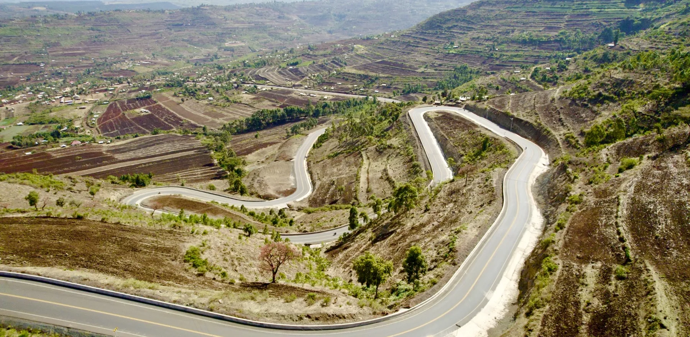

NATIONAL TRANSPORT INFRASTRUCTURE GIS ENTERPRISE
Uganda Transport GIS
Comprehensive view-only portal covering the 21,284.02 km National Road Network (6,406.69 km Paved [30.10%], 14,877.33 km Unpaved [69.90%]; Good 12,610.00 km [59.20%], Fair 7,844.00 km [36.82%], Poor 848.00 km [3.98%]), 552 Bridges, and 452 Major Culverts across 6 Regions and 23 Stations. Synchronised weekly from the Unified SQL Database with zero user inputs required and projected to 2040 as per Vision 2040.
- FY 2025-26
- 21,302 km
- FY 2026-27
- 21,284 km
PUBLISHED MAPPED DATA
Interactive map and registers
Uganda Transport GIS Workspace
Contents
The published map contains 552 Bridges and 452 Major Culverts. Some Link IDs and positions still require review.
Layers load from published static mapped exports. A live database connection is not verified.
Select a road corridor, bridge, culvert, or station on the map to inspect its attributes.
Imagery Hybrid with place labels and boundaries is the default basemap.
Explore network
Filters update the map and charts together (km and %).
MAPPED ASSET LEGEND
Mapped National Roads: 21,284.02 km
Paved (Solid): 6,406.69 km (30.10%)
Unpaved (Dotted): 14,877.33 km (69.90%)
Class A Trunk: 2,604.65 km
Class B National: 2,845.27 km
Class C Primary: 15,689.54 km
Class M Expressway: 144.56 km
Bridges: 552 (247 Good, 71 Sat, 162 Marg)
Major Culverts: 452 (403 Good, 39 Sat)
PUBLISHED TEMPORAL FIELDS
Temporal distribution for this transport layer
Synchronised weekly from the Unified SQL Database and projected to 2040 under Vision 2040.
ROADS21,284.02Mapped National Roads (km)Authoritative Master Register.
TRANSPORT LAYER
Transport Layer Overview
Mapped National Roads (21,284.02 km) shown for context
Open register schedule ↗Distribution across categories
MAPPED ROAD ANALYTICS
Mapped National Roads Condition & Classification (21,284.02 km)
21,284.02 km mapped extent
Condition (MOBICAP(Road condition assesment tool) & ROMDAS(Roughness and rutting machine based testing))
Synchronised weekly from the Unified SQL DatabaseMaintenance Region
Physical length (km)Functional Class
Class A, B, C & Expressway (km)Recorded AADT Field by Functional Class
Length-weighted recorded field (veh/day)The published field is a static historical observation and is not verified as current or live traffic.
Road charts report physical mapped length in kilometres (km) and percentages (%) across the current 21,284.02 km mapped layer. The annual National Roads length series reports 21,302 km for FY 2025-26 and 21,284 km for FY 2026-27. No live database refresh is claimed.
PUBLISHED DATA COVERAGE
Portal Data Flow and Coverage Map
Static mapped exports · Browser calculations · View only
The portal loads published static mapped layers in the browser. The connected database currently has no governed public tables, so live database status and automated refresh are not claimed.
Published Mapped Exports
Select any node above to inspect the published scope, mapped coverage and known data gaps.
Platform Documentation AND STANDARDS
Data Status, Survey Instrumentation and Mapping Standards
Unified SQL Database · Synchronised Weekly · Projected to 2040
National Road Network Layers
Spatial layers, condition schedules and recorded traffic fields load from static published exports. The connected database has no governed public tables, so the portal does not claim live data, current-second reporting or an automated weekly refresh.
MOBICAP(Road condition assesment tool) & ROMDAS(Roughness and rutting machine based testing)
The current 21,284.02 km mapped road layer contains 6,406.69 km Paved and 14,877.33 km Unpaved. Condition fields are associated with MOBICAP(Road condition assesment tool) and ROMDAS(Roughness and rutting machine based testing). The mapped condition totals are 12,608.66 km Good, 7,824.14 km Fair and 851.22 km Poor. The annual National Roads length series is 21,302 km for FY 2025-26 and 21,284 km for FY 2026-27.
Bridges (552) & Major Culverts (452)
Structural inventories are governed in separate registers across 6 Maintenance Regions and 23 Maintenance Stations. The 552 Bridges comprise 247 Good, 71 Satisfactory, 162 Marginal, 52 Poor, 13 Critical, and 7 Under Construction. The 452 Major Culverts comprise 403 Good, 39 Satisfactory, 4 Marginal, 1 Poor, 4 Critical, and 1 Under Construction.
Imagery Hybrid & Metric Conventions
Maps default to Imagery Hybrid with Labels in WGS 84 decimal degrees (EPSG:4326). Paved roads render as solid lines at full width, while unpaved roads render in the same functional class colour at 0.58x width with dotted styling. Metrics use kilometres and percentages. Temporal fields are reported only when present in the published layer.